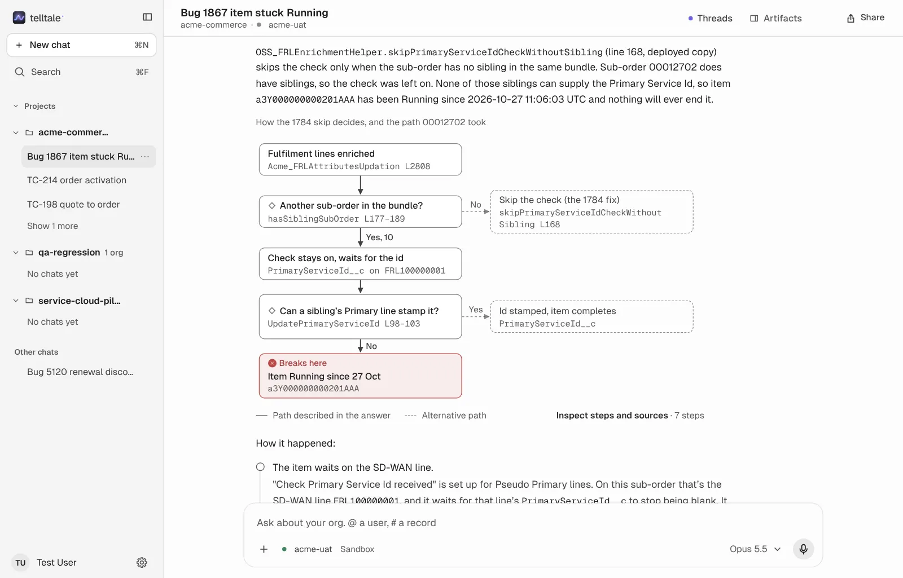
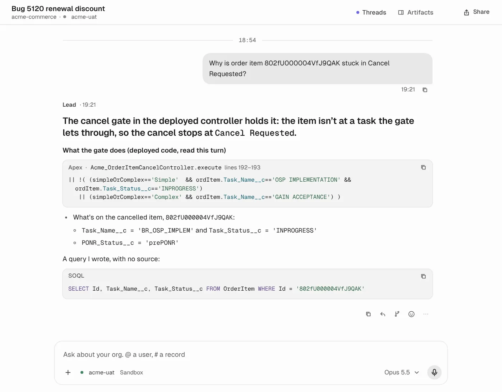
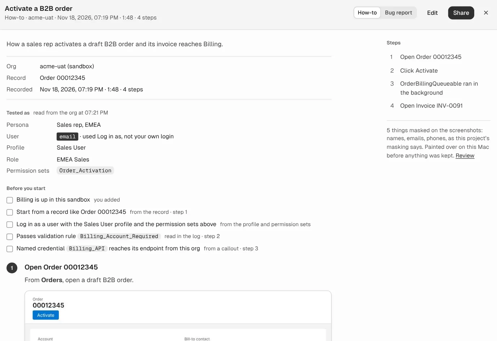
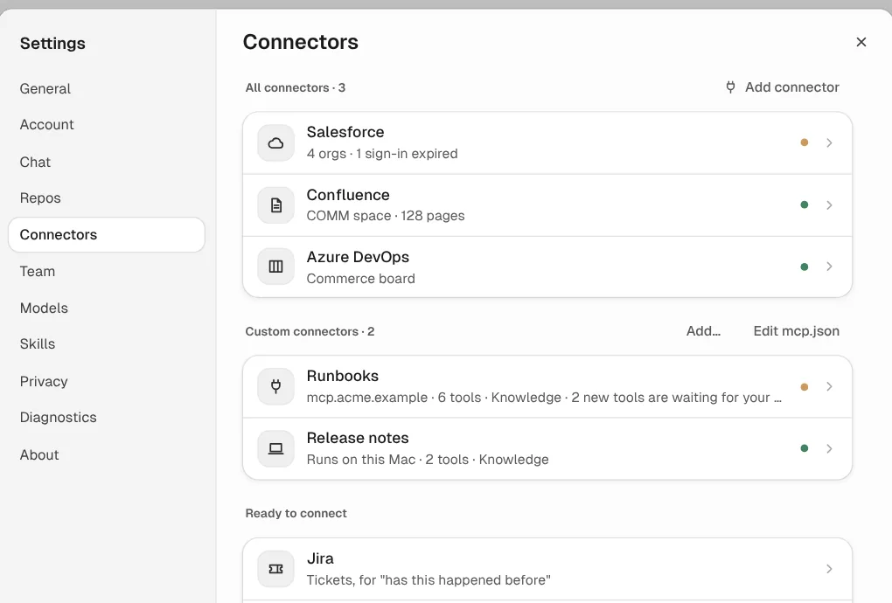

Ask your org. Get the reason.
Telltale is a Mac app for Salesforce developers and QAs. It reads your org, your tickets, your code and your debug logs, then tells you what is going on and shows its proof.
Latestv1.7.4 beta·November 13, 2026
Not sure which Mac you have? Open the Apple menu › About This Mac. If it says Apple M1 or later, pick Apple Silicon. If it says Intel, pick Intel.



Ask a question and get the cause, with the path it took.
Screens from the app, with made-up data.
One teammate for the whole investigation.
Ask your org in plain words
Type a question the way you would ask a colleague. Use @ for a person and # for a record, a ticket or a field. Telltale reads the org and answers with a short explanation or a table.
- Records show by name, not by ID
- Everyday questions get quick answers; heavy cases bring in the team
- Every answer lists what it was based on

See what failed, as it fails
Name the user and the record you are tracing. Telltale turns logging on for them, reads each log as it arrives and explains what ran, where it broke and what to change.
- Big debug logs are read in full
- Logs that share a record are stitched into one story
- Run again to see whether it still fails

From the ticket to the code
Give it a story or bug number. Telltale reads the ticket live, including pictures pasted into it, then checks the steps against the org and reads the code that ran. Jira, Azure DevOps and ServiceNow are supported.
- Reads every file in your code folder and keeps a code map up to date
- Compares two places, such as the org and your repo
- Answers cite the file and the line

Write-ups, flowcharts and exports
Answers come with diagrams where a picture helps. Ask for a how-to, a bug report or a design doc and Telltale writes it for you to edit and share.
- Flowcharts and sequences you can open step by step
- Export a chat as PDF, Word or Markdown
- Secrets and tokens are taken out first

Slack, your wiki and your own tools
Connect what your team already uses. Telltale searches Slack or Teams, reads Confluence pages and talks to your own tool servers, and it only reads unless you say otherwise.
- Paste a Slack thread link and get a drafted reply to edit
- Nothing is posted until you press Send
- Connectors you already set up on your Mac are found for you to trust

Answers you can check
Your lead splits a question across specialists that each check one thing. A separate Answer checker looks every answer over and says plainly what it could not confirm.
- Reads ask first, and production is blocked unless you confirm
- Fixes deploy to a sandbox only, and only when you click
- Personal data is masked before anything goes to a model

What's new
Installing takes a minute.
- DownloadPick the zip for your Mac above.
- UnzipDouble-click the zip in your Downloads folder.
- Drag to ApplicationsMove Telltale into Applications, then open it.
Telltale needs macOS 13 or later. The first time you open it, macOS may say it can't check the app for malicious software. Open System Settings › Privacy & Security and choose Open Anyway.
Tell us how it went.
Pick a rating and add a few words. No account needed. It takes about a minute and it shapes what gets fixed next.
Each message becomes a public GitHub issue. Don’t include org names, customer data or anything private.
Downloaded around the world.
Total downloads are exact, counted by GitHub. Countries show downloads started from this page in the last 90 days. Only the country is kept, never anything about who downloaded.
Where the downloads came from